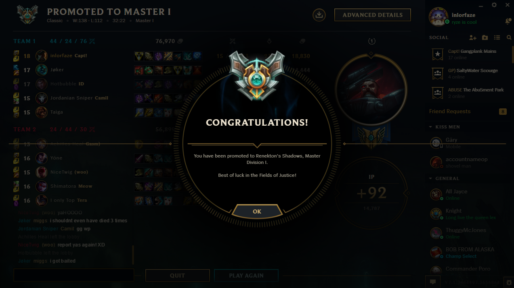
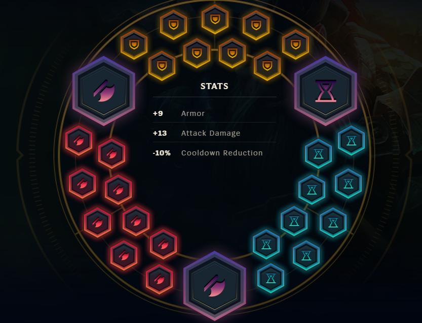

Introduction
I am inlorfaze. I have been playing gangplank since 2015 and have a cumulative 1 million mastery points on gangplank. I started playing him at gold 2 and got to masters with him. 
I play a tobias-inspired playstyle, mid lane preferred. This guide is not what I think is best, however. It will include several different playstyles and in-depth top lane discussion. I have played every type of gangplank you can think of - full ad runes, early game gangplank, jungle gangplank, ap gangplank, you name it. I've played it. In high elo NA. Which is why I think that this guide is actually worth reading. This guide is not law - you need to read through this guide, and play the many different variations. Gangplank is a champion that takes many games to learn - he is extremely rewarding, but expect to have a huge learning curve. Remember - practice makes perfect. Reading this guide isn't going to get you do diamond - reading this guide and finding your niche by playing a lot of gangplank will, however.
Quick Guide
Runes
(CDR= Cooldown Reduction)Runes are very important on gangplank. There are many variations, and they all are useful depending on your playstyle. CDR Runes are very popular and good because it decreases your huge barrel cooldown a ton, and helps you farm with q's much easier in the early game. You can read this link for more reading.
Attack Damage - RECOMMENDED FOR BEGINNERS
Used more often in the top lane. Early game focused runes that will help you trade and push better. Take scaling health seals (yellows) against ap matchups, and alternatively change glyphs to magic resist or 6 flat CDR 3 scaling CDR 1 CDR quint if you want to give up 5% early CDR.
Lethality
Sacrifice early game stats altogether for a huge payout - run lethality runes. Lethality is a flat penetration stat that gets more and more effective as your enemies lvl increases. Therefore, early game you deal much, much less damage. It will make trading and last-hitting very difficult. However, come around triforce and level 7 and above and you will start seeing your lethality runes shine. This page will have the maximum damage in the late game.

SITUATIONAL: Swap out CDR for a lethality quint and magic resist glyphs (blues), useful for tough ap matchups that you still want to scale into, or swap out scaling health seals (yellows) for armor against tough ad matchups.